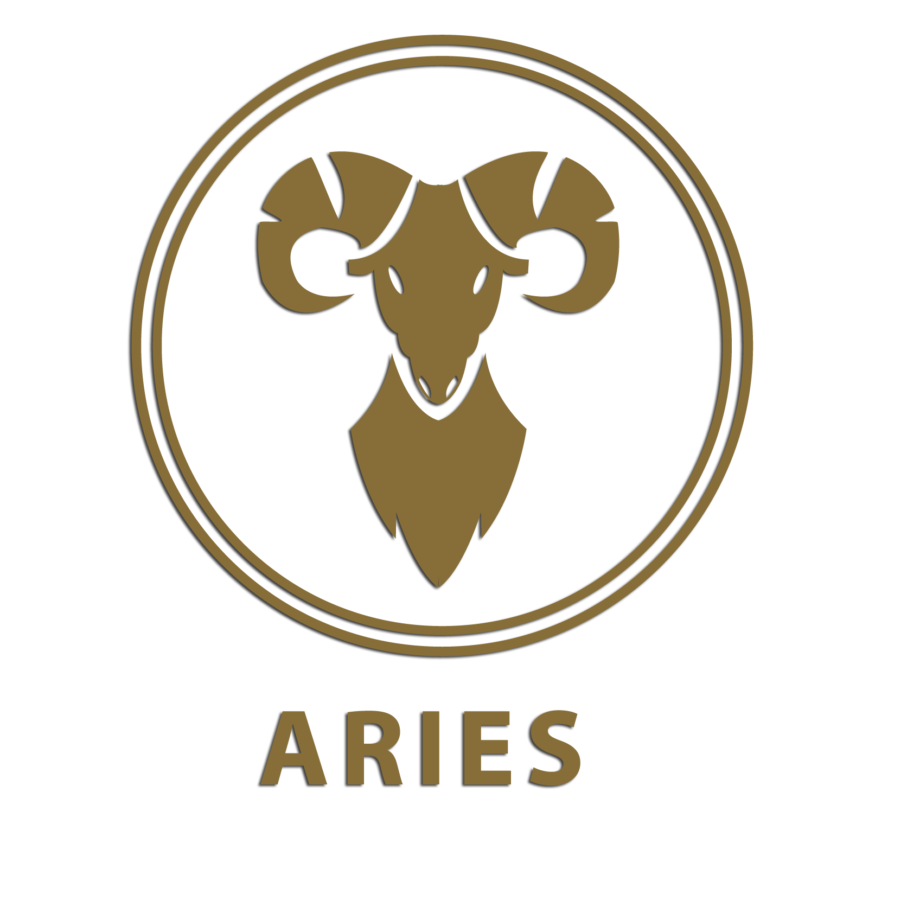

Aries (Mar 21 – Apr 20)
LOVE AND ROMANCE
Always look to the period when Venus has the strongest relationship with your sign for your most promising romantic prospects. This year Venus will be most influential in July, so you should plan your most important arrangements for then. Yet life could be tempestuous unless you get your priorities right. You will be unsure whether to accept outrageous invitations or stick to the straight and narrow. It could be August before you can assess the wisdom of your actions. By October you will be able to sit back while loved ones make the running.
WORK AND MONEY
You will have to sort out your financial affairs in February, taking decisions about where you’re keeping your savings and what you can afford. Vivacious Venus will be stirring up passions, giving you fresh ideas about how you should use your time; the more spontaneity you introduce into your life this year, the happier you’ll be. The New Moon in May looks excellent as far as your professional prospects are concerned; you are bound to make a fresh start. Career-wise, October and November are powerful months, although the rewards may be a long time coming. Caution is counselled, although some change does look inevitable.
HOME AND FAMILY
Family and domestic preoccupations continue to be a major consideration throughout February, while in March you may be presented with all the opportunity you need to make a fresh start. This is the last time to take any risks — or take a partner for granted, perhaps because finances could be a major cause of disagreement. If you’re calling in the builders or decorators in July or August, then you should be careful to check all instructions — and leave nothing to chance. If you are determined to push through major improvements, then early October may give you the best chance.
TIP FOR THE YEAR
More comfort, more luxury, more space. That’s what you need.